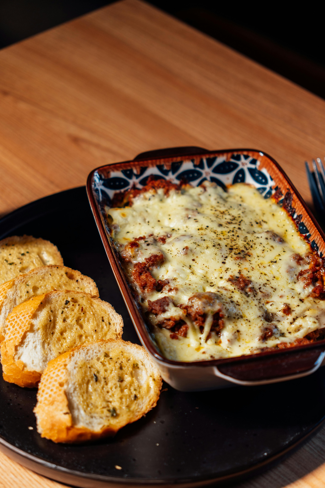

Lasagna Recipe!

Description
Lasagna is a classic Italian baked pasta dish made with wide, flat noodles layered with rich sauce and cheese Traditionally, it features layers of savory meat sauce (often made with ground beef or sausage and tomatoes), creamy ricotta or béchamel, and plenty of melted mozzarella and Parmesan cheese.
As it bakes, the flavors meld together into a hearty, comforting casserole with a golden, bubbly top and soft, tender layers inside. Each slice reveals distinct layers of pasta, sauce, and cheese, making it both visually appealing and deeply satisfying.
Lasagna is often served as a main course for family dinners, holidays, or gatherings because it’s filling, flavorful, and perfect for feeding a crowd.
Ingredients
- 15 oz (425 g) ricotta cheese
- 2–3 cups shredded mozzarella cheese
- ½–1 cup grated Parmesan cheese
- 1 egg
- 2 tbsp chopped fresh parsley (optional)
- Salt & pepper to taste
- 9–12 lasagna noodles
- 1 lb (450 g) ground beef (or half beef, half Italian sausage)
- 1 small onion, diced
- 2–3 cloves garlic, minced
- 24 oz (680 g) marinara or pasta sauce
- 1 can (14–15 oz) crushed tomatoes (optional for extra sauce)
- 1 tsp Italian seasoning
- Salt & pepper to taste
- 1–2 tbsp olive oil
- Spinach (fresh or frozen, drained)
- Mushrooms
- Red pepper flakes
- Fresh basil
Follow the below steps to prepare Delicious Lasagna at home!
- Bring a large pot of salted water to a boil.
- Cook lasagna noodles according to package directions.
- Drain and lay flat on parchment or foil so they don’t stick.
- Heat 1–2 tbsp olive oil in a large pan over medium heat.
- Add diced onion and cook 3–4 minutes until soft.
- Add garlic and cook 30 seconds.
- Add 1 lb ground beef (or beef/sausage mix). Cook until browned. Drain excess fat.
- Stir in marinara sauce, crushed tomatoes (if using), Italian seasoning, salt, and pepper.
- Simmer 15–20 minutes.
- In a bowl, combine:15 oz ricotta, 1 egg, ½ cup grated Parmesan, 2 tbsp parsley (optional) and Salt & pepper. Mix until smooth.
- In a 9×13 inch baking dish: Spread a thin layer of meat sauce on the bottom.
- Add a layer of noodles.
- Spread ricotta mixture.
- Add meat sauce.
- Sprinkle mozzarella.
- Repeat layers (usually 3 layers total).
- Finish with sauce and a generous layer of mozzarella and Parmesan on top.
- Cover with foil (spray foil underside to prevent sticking).
- Bake 25 minutes covered.
- Remove foil and bake another 20–25 minutes until bubbly and golden.
- Let rest 10–15 minutes before slicing.
- Garnish with fresh basil if desired.
Home